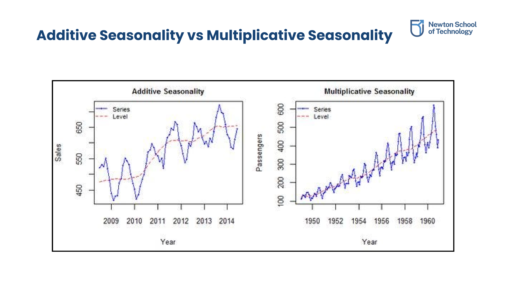
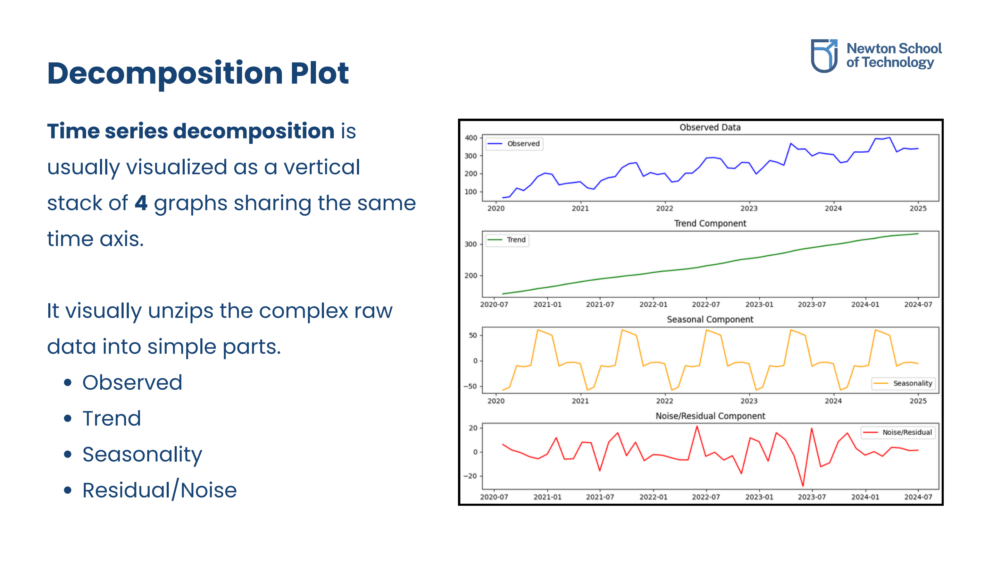
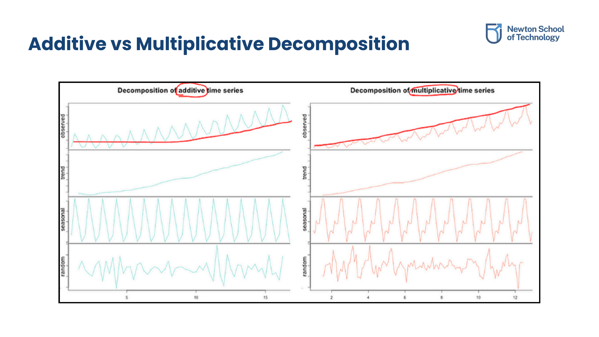

Introduction to Time Series Data
1.1 The Shuffling Test
Time series data is a sequence of data points collected or recorded at specific, sequential time intervals. The primary distinction between standard data and time series is that temporal ordering is critical.
"If you can shuffle the x-axis and nothing breaks, it was never a time series."
In standard datasets, the order of rows does not alter their meaning. In time series, values are indexed by time, and shuffling the sequence destroys the underlying information and relationships.
1.2 Real-world Examples
Time series datasets occur across many domains:
- Weather Data: Daily temperature recordings.
- Sales & Revenue: Monthly performance metrics.
- IoT & Wearables: Daily step counts (e.g., Fitbit data).
- Web Analytics: Website page views per hour or day.
- Agriculture: Crop yield over consecutive years.
- Finance: Minute-by-minute stock, commodity, or cryptocurrency prices.
Our course opening slide references a classic reflection on how knowledge is acquired:
"A student acquires knowledge in four equal parts: one-fourth from the teacher, one-fourth through self-reflection, one-fourth through discussions with peers, and the final one-fourth over time through personal experience."
Case Study: Energy Demand Forecasting
2.1 Forecasting Horizons
A power distribution utility must forecast electricity demand (load) at multiple temporal scales to operate efficiently and safely. Incorrect forecasting leads to blackouts or wasted generation costs:
- Real-time load balancing (15-minute ahead): Ensuring immediate supply matches demand on the grid.
- Generation planning (Day-ahead): Scheduling power plants and purchasing energy resources.
- Maintenance scheduling (Week-ahead): Shutting down transmission components for maintenance without outages.
2.2 Feature Engineering for Time Series
To forecast a target variable like Load (in MW), features are categorized into distinct groups:
- Time-based Features: Extracting calendar variables like
hour(0-23),day_of_week,is_weekend(boolean), andmonth. - Historical (Lag) Features:
load_t-1: Value from the last 15 minutes.load_t-4: Value from 1 hour ago.load_t-96: Value from the same time yesterday (96 steps * 15m = 24 hours).
- Rolling Statistics: Smooth values over a window, e.g.,
rolling_mean_1handrolling_mean_24h. - External features:
temperature,humidity, andholiday_flag.
Time Series Structures: Index & Frequency
3.1 The Time Index
The time index represents the specific timestamp at which each observation was captured. Without a consistent time index, order becomes unclear, patterns break, and interpretation becomes unreliable.
The Time Index allows algorithms to:
- Detect gaps or missing values in logging.
- Align and compare separate events.
- Measure the physical spacing between consecutive observations.
3.2 Observation Frequency & Noise
Frequency represents the time gap between consecutive observations. Adjusting the frequency trade-offs detail against clarity:
- Higher Frequency: Provides rich detail but introduces substantial high-frequency noise (e.g., per-second IoT sensors).
- Lower Frequency: Smooths out local variance and highlights long-term trends, but can hide transient anomalies (e.g., yearly inflation).
| Frequency | Best For | Shows | Hides |
|---|---|---|---|
| Yearly | Macroeconomics | Decadal Trends | Seasonal cycles |
| Monthly | Climate & Business Planning | Seasonal swings | Daily spikes |
| Daily | Operations | Weekly habits | Hourly peaks |
| Hourly | Logistics & Web Traffic | Intraday peaks | Sensor glitches |
| Per-Second | High-frequency IoT | Immediate failures | Long-term drift |
Core Behavioral Components
4.1 Linear vs. Non-linear Trends
A trend represents the long-term movement in the data, ignoring local wiggles. It is the underlying direction of the series:
- Linear Trend: The value increases or decreases by a fixed, constant amount at each time step (represented as a straight line). Easy to forecast by extending the line.
- Non-Linear Trend: The rate of change varies over time, resulting in a curved path (e.g., exponential growth, quadratic curves, or plateaus). Highly complex to forecast.
4.2 Additive vs. Multiplicative Seasonality
Seasonality represents patterns that repeat at fixed, regular intervals (daily, weekly, monthly, or yearly):
The amplitude of seasonal swings stays constant over time, regardless of the overall trend level. The seasonal component acts as a fixed value added to the base.
Example: Daily outdoor temperature. Summer is always warmer than winter by a relatively stable difference in degrees, even if the multi-year average temperature shifts slightly.
The amplitude of seasonal swings grows or shrinks in proportion to the trend level. The seasonal component represents a percentage scaling factor of the base.
Example: Retail sales of a growing business. Holiday sales spikes become larger in total volume every year because they scale proportionally with the overall growth of the business.

Comparison of Additive Seasonality (constant fluctuations) and Multiplicative Seasonality (fluctuations scale with trend level)
4.3 White Noise vs. Structured Noise
Noise (Residuals) is the random variation that cannot be explained by trends or seasonality:
- White Noise: The variables are independent and identically distributed (i.i.d.) with a constant mean and variance. Knowing the past values provides zero predictive value for future points.
- Structured Noise: Appears random but contains underlying correlation or dependencies over time (e.g., autoregressive processes where values are correlated with their immediate history). Mean and variance may fluctuate.
Time Series Decomposition
5.1 Additive vs. Multiplicative Formulation
Time series decomposition isolates the underlying components of a complex signal into three independent series: Trend (Tt), Seasonality (St), and Residuals/Noise (It).
- Additive Model: Used when seasonal variations do not scale with the level of the trend.
x(t) = T(t) + S(t) + I(t)
- Multiplicative Model: Used when seasonal variations increase or decrease in proportion to the trend.
x(t) = T(t) × S(t) × I(t)
5.2 Visualizing the Decomposition Stack
A classical decomposition plot is visualized as a vertical stack of four synchronized graphs sharing the same horizontal time axis:
- Observed (Original): The raw, noisy time series data.
- Trend (Tt): The extracted long-term directional movement.
- Seasonality (St): The extracted repeating cyclical patterns.
- Residuals (It): The remaining random noise or error terms.

Classical decomposition stack showing the Observed Data, Trend Component, Seasonal Component, and Noise/Residual Component

Visual comparison of Additive Decomposition versus Multiplicative Decomposition
Original PDF Notes
Below is the original PDF document for your reference: